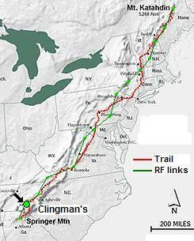

2021 Preps: A last minute loss of operator is causing us to look far and wide for a replacement operator. I made this Google Satellite view of the area from the parking lot to the lookout platform.
2014 Report: Matt, KF4WZB met with Zach - KJ4QLP, in the VTARA ham shack to go over the equipment (all owned by VTARA) that was used during the 2013 AGPE. This consisted of a 35AH sealed lead acid battery, D700, and Diamond X-50 antenna mounted on a tripod. Matt received information from John that the main event on the 20th would be from 1200 to 1600. (it actually should have been 1100-1500).
He left his campground with his family at Altamons (near Shawsville, VA) at 1000 and made it to Comers Rock at 1150 (He had absolutely no cell service at the campground). As he was approaching the mountain top, Roan Mountain and Lynn (Shack Potato) both called on the cell asking when he was going to be on the air (apparently everyone was nervous that CR would be a no show). Matt and family hauled the gear the rest of the 100ft from the dirt road turnaround to the outlook (which had recently been renovated with new timber guard rails). He quickly assembled the station within 5 minutes and had Comers Rock up at 1158. He had the D700 digipeater sending traffic upstream and downstream.
At about 1220 he noticed GD hill had not seen COMERS and then noticed that his BEACONS button was not enabled on the D700. FIxing that, he began to appear at all stations. The X-50 antenna was mounted on a 3 foot tall tripod that was on the lookout concrete slab. The D700 ran at low power (5 Watts) for the first hour and made it great to both AO and Roan. He later increased the power to High so that other stations not part of the exercise might hear him better.
QUADcopter Flight: Once the APRS system was operating, Matt had time to deploy his Blade 350QX Quadcopter with 1080P Mobius Actioncam recorder and 5.8 GHz 200 mW video transmitter for some aerial video of the site. He could fly it easily in GPS lock (safe) mode and only flew it straight up and back down, though he did set advanced mode and flew to 400' above his location to look around above the very low clouds! What fun Hams have!
Matt noted the confusion regarding when to shut down. Bob sent the message stating that the mission was a success and to go ahead and tear down (maybe between 1300 and 1315). Stations 1-3 started to relay voice traffic north to have #15 send another message back to #1 and to continue to relay that message north. Soon thereafter the shack potato called Matt on his cell phone to say #15 had already shut down. He suggests next year there needs to be made clear how the event is going to play out, what is considered mission success, and who makes the call to "break link". Matt stayed on the air until 1400 and then broke down the station within 5 minutes and was off the hilltop by 1405.
Matt suggests a better investment in (lighter) Li-based batteries and more buy-in from local hams within the Comers Rock area. It woiuld be best if there was more publicity before the end of the spring semester and everyone leaves the area. There were some hams that volunteered to assist, but it turned out that just Matt and his family were able to do it.
Matt was happy that Packet radio is still alive. He had run BURKBB on the VDEN (Virginia Digital Emergency Network) back in 1999-2001 and wasvery familiar with backbone links to pass packet radio traffic over long distances. It was great to see this event in action over such a great distance! Well done and great work by all those that participated.
Matt also made a great Quad Copter video of the station from above in case anyone is interested. (He checked ahead of time and saw that the Jefferson National Forest does not have any explicit rules against drone use (only the NPS does)).
 2013 Planning: Zach is again leading the Virginia Tech team this year. See the summary
spread sheet.
2013 Planning: Zach is again leading the Virginia Tech team this year. See the summary
spread sheet.
2012 Planning: Zach Leffke (KJ4QLP) organized for VTech. He was joined by Glenn N4AZR who had some prior Roan experience. This should be an exciting year with the combined GOlden Packet and Scouting's Operation ON-TARGET on Saturday 21 July.
Team for 2011: Mike Benonis KI4RIX formed a team from the Radio Club at Va Tech in Blacksburg VA and made a success of Comers Rock this year!. They are into VHF contesting so this suits their activities nicely. See the Comers 2011 report. Comers rock was a no show for 2010 and was rained out and not operational in 2009. See the 2009 Comer's Rock Report
This is one of the 15 hill-top sites from Georgia to Maine we hope to visit this summer on 26 July for 6 hours to attempt to relay a text message using hand-held radios the 2000 mile length of the Appalachain trail. This is to be a no impact Leave-No-Trace type of event of a few individuals at each site. . See the Golden Packet plan. . Other hikers equipped with APRS ham radios are welcome to participate.
Comers Rock is located SE of Wythville in an ideal location that has a rare view between mountains back to Roan mountain with no obstructions and also has a view to the Northeast to Apple Orchard Mountain. It has a gravel road along the ridge so it could be operated from a mobile if a 50 foot mast was used to get above the trees. But it has a great campsite and walk-up access to the actual Comer's Rock lookout plaform with 360 degree views. Prior to finding Comers Rock, we had been looking at Sand Mountain but it is full of commercial RF equipment, locked access road, requires off-road vehicle and hams have difficult access to the 2m repeater and APRS digipeater there. For these reasons and to avoid RF intermod, we are now planning on using Comers Rock for its easy drive-up access and pleasant surroundings.
 ALTITUDE: . . . . . . . . . . . 3785 feet
POSITION: . . . . . . . . . . . . 3645.61N / 08113.17 on road. (was 3645.80N / 8113.43W)
LINK NORTHEAST:. . . . Apple Orchard Mountain test with 146.685 Tone 100
See
RF details
by KX4O
LINK SOUTHWEST:. . . . Roan Mountain
See
RF details
by KX4O
VOICE REPEATER:. . . . . 444.175+ T103
ECHOLINK NODE: . . . . . K4IJ-R #126596
IGATE NEARBY: . . . . . . W4VPI-1
INTERFERRENCE: . . . . None. This site has no RF, amateur or commercial.
TEAM LEADER:. . . . . . .
. . . . . . . . . . . . . . . . . . . . . . Mike Knight K4IJ. (2009)
. . . . . . . . . . . . . . . . . . . . . . William McKeehan KI4HDU (mckeehan*mckeehan.homeip.net)
. . . . . . . . . . . . . . . . . . . . . . Maybe the
Dismal Peak Amateur Radio Society
can also help?

COMMENTS: .
Mike, K4IG Reports:
I am going to try to be at Comers Rock. My schedule is up in the air
at the moment but am going to make an attempt. Will be running a yagi and
my D700 if all works out. Should know better next week
Gerald Saunders K4YW * embarqmail dot com reports:
Comers Rock is a lot more RF and access friendly than Sand Mountain.
I have been to Comers Rock, and you can drive a car to that location with
no gates no keys and no politics involved. Once there, there are some steps
up to the observation peak shown in the upper left; less than 50 yards.
The campground
is in a lower saddle along the ridge. A mobile operating position
might work at the location "B" above in front of an abandoned house. But
the trees are mature and will require a very large mast to clear them.
Above you can see the 50 yard treck up the steps to the overlook platform at the top. The platform has good views in all directions. I'm not sure the best method to mount a short mast to the rock posts, but a 10 foot mast should be used to get the antenna field above the heads of participants so their movements do not impact the links.
In this view the VX-8R is sitting on the central post. A sun shade should probably be included in the station.
The campground (above) is a drive-up site, sitting in a small saddle between two higher areas along the ridge. It is heavily shaded by the tall trees. Operating from this site is not recommended as it is about 100 feet lower and there will be lots of tree loss.
This view shows the abandoned house which is along the road at just about the highest point on the road. You can see the maturity of the trees.
To get there from Wythville, go South on 21 south, Right on SR 658 paved.
Right on Blue Spring Rd state maintained gravel, Then that will
take you up the mountain to the forest service road 57. A Left
would take you around the mountain where the cabins were, nice flat
areas up there. Right would take you back toward Hale's lake and Comers Rock.
Gerald

DETAIL LINK ANALYSIS BY KX4O: Be sure to follow the two RF links at the
top of this page to see the excellent and very detailed RF link analysis
performed for every link in this project by KX4O John Huggins.
Each RF link shows the terrain map
elevations, the AT trail in yellow, the RF path loss itself
including fresnel zones and finally a
statistical plot of the probabilities of link availability. We will very
much be looking at the results of this project compared to the pre-event
analysis and predictions. All of his links are visible on his
AT Links Page.
WB4APR Reports (wb4apr*amsat.org) reports: .
Visited the site on 6 June and found it with a wonderful campground in the triangle of road that is visible in the Google Earth view. Trees are tall, but you can drive to within 50 yards of the actual peak. On top is a flat concrete pad with rock corner posts for side railings (missing), which makes a great 360 degree operating point as shown below.
HIKE-UP PREFERRED: In my opinion it will be much easier and far more pleasant to operate with battery power from this walk-up location than to fuss with a 50 foot mast to get above the trees on the nearby road. The highest point on the road is in front of the abandoned house shown in the two views below. As you can see the trees are mature. It is true that the road is on the ridge so the ground does fall away rapidly in both link directions, but fr this first year, operation from the peak is recommended. Of course, the backup station could try just operating from the mobile in the trees at this location for possible use next year?
The next image shows the Google Earth views of the RF paths from Roan Mountain to the from the southwest to Sand Mountain and from Sand Mountain to Apple Orchard Mountain..
Again, the RF path provided by KX4O looks like a good shot from Roan as shown in the RF links above...
Bob, WB4APR
See my other GENERAL page on APRS applications and Ideas on the AT
Return to the APRS HOMEPAGE or SiteMap.
{kind=link}